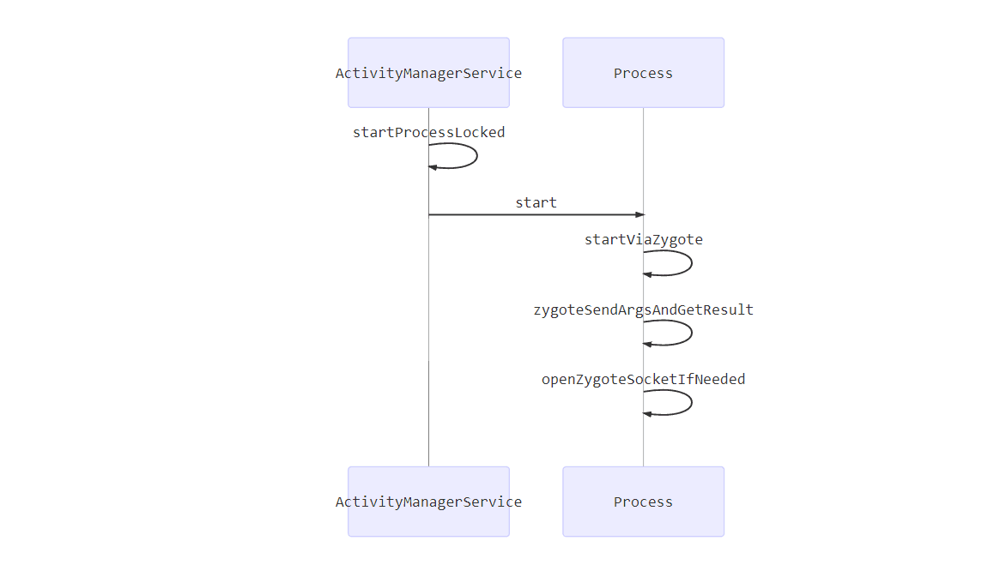
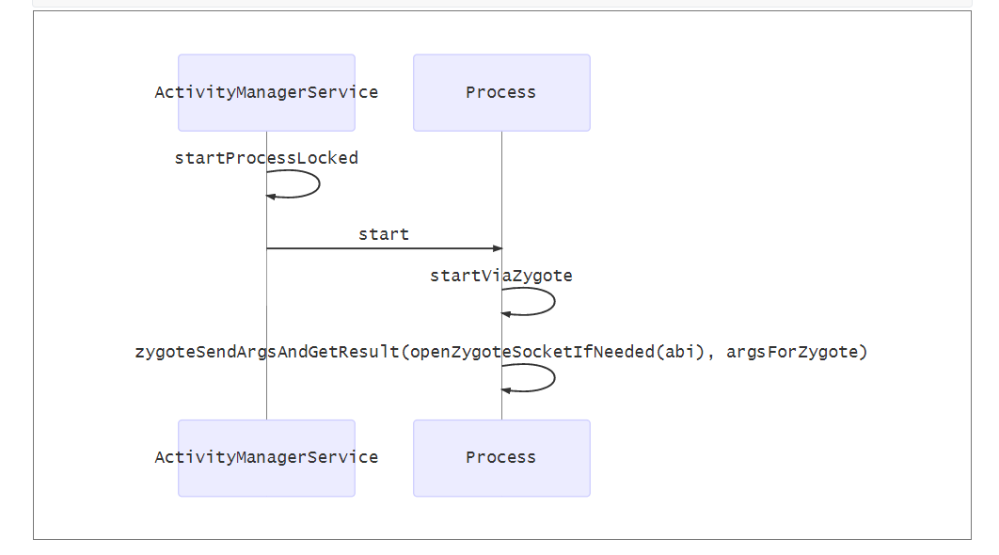

SystemServer
概述
- SystemServer的进程名实际上叫做“system_server”,通常简称为SS
- Java层崩溃，Linux系统进程init就会启动一个SystemServer和Zygote，以重新建立Android的Java层
- SS是由Zygote通过Zygote.forkSystemServer函数fork诞生出来的
- 与Zygote生死与共.SS诞生后,便和生父Zygote分道扬镳,它有了自己的历史使命
图示

流程
startSystemServer
- ZygoteInit.java
1 | private static boolean startSystemServer(String abiList, String socketName) |
- com_android_internal_os_Zygote.c
1 | // |
handleSystemServerProcess
- SS 调用 handleSystemServerProcess 来承担自己的责任
- SS 调用 zygoteInitNative后，在 onZygote中，执行了 proc->startThreadPool(); ，这一句会启动一个线程，用于Binder线。即，将与Binder通信系统建立联系，这样就能够使用Binder
- invokeStaticMain 会抛出一个异常，会在ZygoteInit的main方法中被截获
- invokeStaticMain 调用SystemServer的main函数
- 而最后在caller.run() 方法中，会执行 mMethod.invoke(null, new Object[] { mArgs });
真面目
ZygoteInit.java 分裂产生的SS,其实就是为了调用ZygoteInit.java的 mMethod.invoke(null, new Object[] { mArgs })这个方法，也就是调用com.android.server.SystemServer的
main函数SystemServer.java
1
2
3
4
5
6
7
8
9
10
11
12
13
14
15
16
17
18
19
20
21
22
23
24
25
26
27
28
29
30
31
32
33
34
35
36
37
38
39
40
41
42
43
44
45
46
47
48
49
50
51
52
53public static void main(String[] args) {
/*
* In case the runtime switched since last boot (such as when
* the old runtime was removed in an OTA), set the system
* property so that it is in sync. We can't do this in
* libnativehelper's JniInvocation::Init code where we already
* had to fallback to a different runtime because it is
* running as root and we need to be the system user to set
* the property. http://b/11463182
*/
SystemProperties.set("persist.sys.dalvik.vm.lib",
VMRuntime.getRuntime().vmLibrary());
if (System.currentTimeMillis() < EARLIEST_SUPPORTED_TIME) {
// If a device's clock is before 1970 (before 0), a lot of
// APIs crash dealing with negative numbers, notably
// java.io.File#setLastModified, so instead we fake it and
// hope that time from cell towers or NTP fixes it
// shortly.
Slog.w(TAG, "System clock is before 1970; setting to 1970.");
SystemClock.setCurrentTimeMillis(EARLIEST_SUPPORTED_TIME);
}
if (SamplingProfilerIntegration.isEnabled()) {
SamplingProfilerIntegration.start();
timer = new Timer();
timer.schedule(new TimerTask() {
public void run() {
SamplingProfilerIntegration.writeSnapshot("system_server", null);
}
}, SNAPSHOT_INTERVAL, SNAPSHOT_INTERVAL);
}
// Mmmmmm... more memory!
dalvik.system.VMRuntime.getRuntime().clearGrowthLimit();
// The system server has to run all of the time, so it needs to be
// as efficient as possible with its memory usage.
VMRuntime.getRuntime().setTargetHeapUtilization(0.8f);
Environment.setUserRequired(true);
System.loadLibrary("android_servers"); //加载库
// Initialize native services.
nativeInit(); //在 /base/services/jni/com_android_server_SystemServer.cpp
// This used to be its own separate thread, but now it is
// just the loop we run on the main thread.
ServerThread thr = new ServerThread();
thr.initAndLoop();
}android_server_SystemServer_nativeInit.cpp
1
2
3
4
5
6
7
8
9// frameworks/base/services/jni/com_android_server_SystemServer.cpp
static void android_server_SystemServer_nativeInit(JNIEnv* env, jobject clazz) {
char propBuf[PROPERTY_VALUE_MAX];
property_get("system_init.startsensorservice", propBuf, "1");
if (strcmp(propBuf, "1") == 0) {
// Start the sensor service
SensorService::instantiate();
}
}
zygote 分裂
- zygote 分裂出 system_server 之后，通过 runSelectLoopMode 等待并处理来自客户的消息
ActivityManagerService 发送请求

ActivityManagerService.java /framewroks/base/services/java/com.android.services/am/ActivityManangerService.java
Process.java /frameworks/base/core/java/android/os/Prcoess.java
zygoteSendArgsAndGetResult
- openZygoteSocketIfNeeded
- 把请求的参数发到 Zygote
openZygoteSocketIfNeeded
1
2
3
4
5
6
7
8
9
10
11
12
13
14
15
16try {
sZygoteSocket = new LocalSocket();
// 链接 Zygote
sZygoteSocket.connect(new LocalSocketAddress(ZYGOTE_SOCKET,
LocalSocketAddress.Namespace.RESERVED));
sZygoteInputStream
= new DataInputStream(sZygoteSocket.getInputStream());
sZygoteWriter =
new BufferedWriter(
new OutputStreamWriter(
sZygoteSocket.getOutputStream()),
256);
Log.i("Zygote", "Process: zygote socket opened");
sPreviousZygoteOpenFailed = false;
......
}ActicityManagerService 终于向 zygote 发送请求了。
- 请求的参数中有一个字符串，它的值是 “android.app.ActicityThread”
响应请求
- 请求之后，会回到 ZygoteInit 之中

- ZygoteConnection.java
1 | //frameworks/base/core/com/android/internal/os/ZygoteConnection.java |
- 而 RuntimeInit.zygoteInit 方法中，nativeZygoteInit这个jni函数，最终实现的是 proc->startThreadPool() 即：建立了Binder服务。
启动PMS
小结
- 本博客基于
基于Android版本 5.1_LMY47D
- 本文链接：https://www.wl960127.top/posts/53902/
- 版权声明：本站内容均为个人学习笔记,不涉及商业用途，仅提供学习参考,第三方摘录已署名链接,未署名请评论添加,转载署名来源即可。
分享